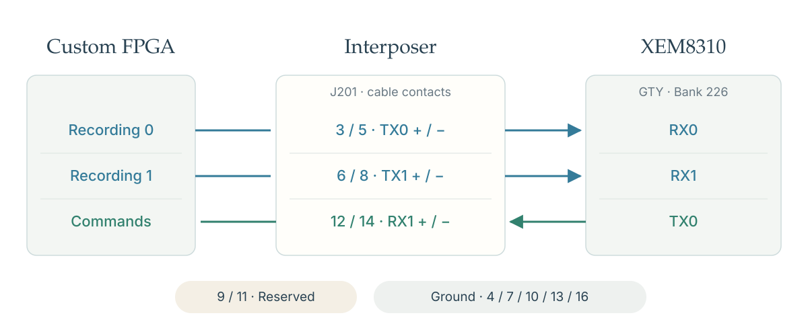
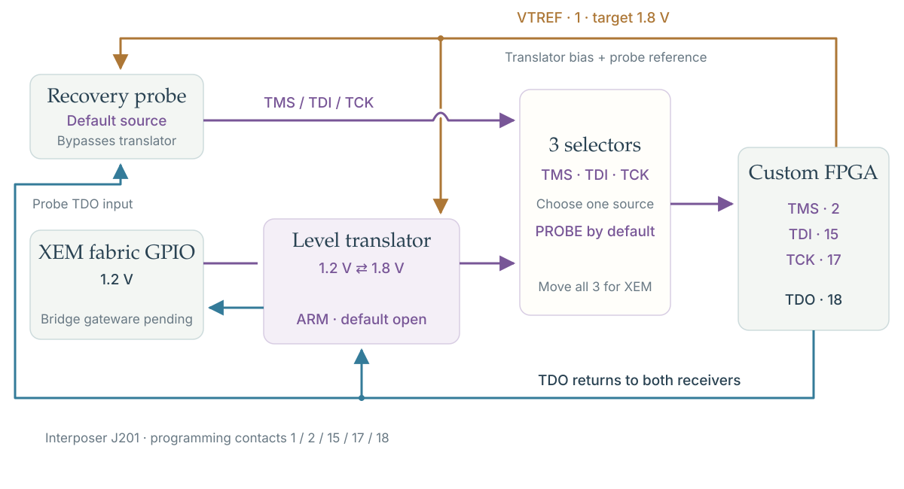
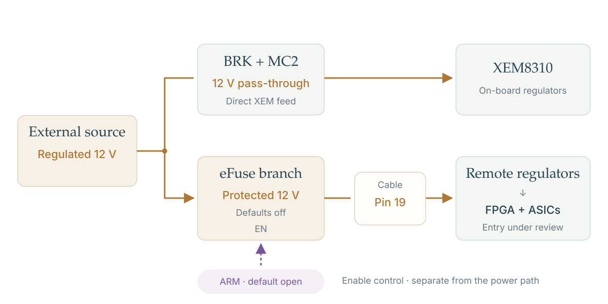

R12 · CONNECTION OVERVIEW · 29 SEP 2026
One 19-pin link.
Recording goes to XEM.
Commands return to the custom FPGA.

Choose the programming source.
Probe by default. XEM uses a level translator.

One source, two power paths.
XEM feed and cable protection are separate.
